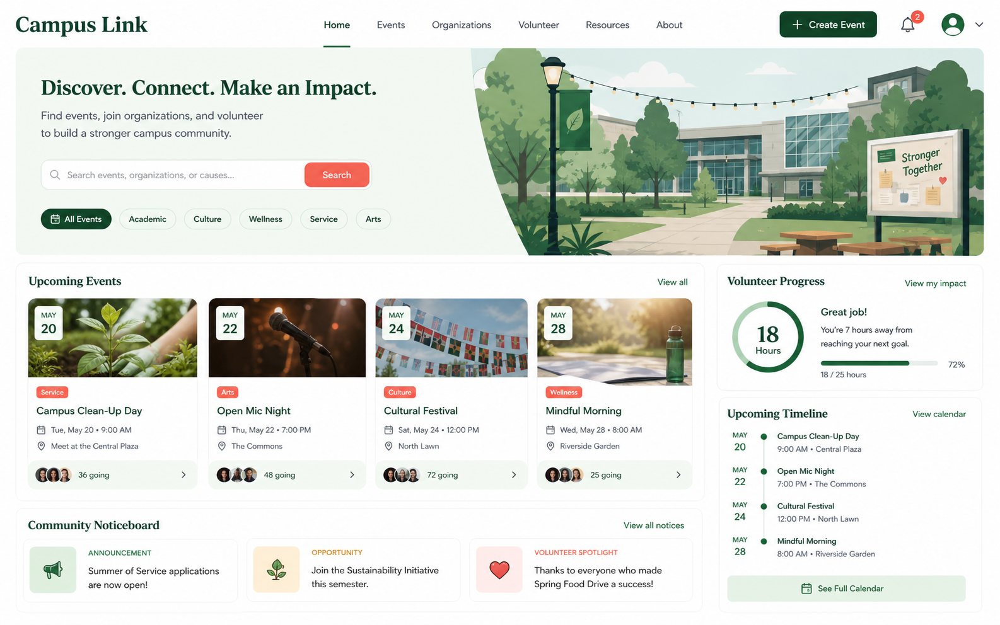

Team project
Campus Link
校内イベントの発見、参加、運営をひとつにつなぐことを目標に、チームで企画・設計したWebサービスです。
これは制作物表示の確認用に作成した架空のサンプルです。人物や団体は実在しません。

企画
利用者への聞き取りを想定し、必要な情報と操作を整理しました。
分担
画面設計、データ設計、実装、発表準備を役割分担しました。
改善
レビュー結果を共有し、優先順位を決めて更新しました。
ClassView Sample Works
グループ制作へ戻るTeam project
校内イベントの発見、参加、運営をひとつにつなぐことを目標に、チームで企画・設計したWebサービスです。
これは制作物表示の確認用に作成した架空のサンプルです。人物や団体は実在しません。

利用者への聞き取りを想定し、必要な情報と操作を整理しました。
画面設計、データ設計、実装、発表準備を役割分担しました。
レビュー結果を共有し、優先順位を決めて更新しました。